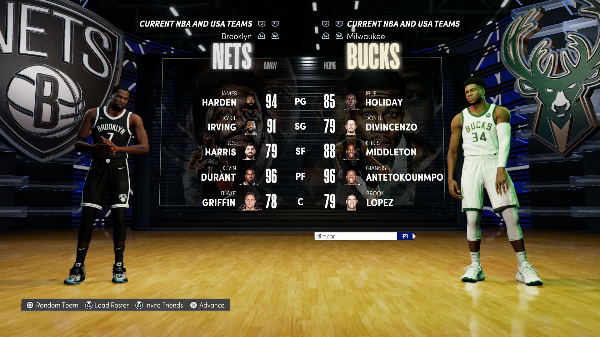
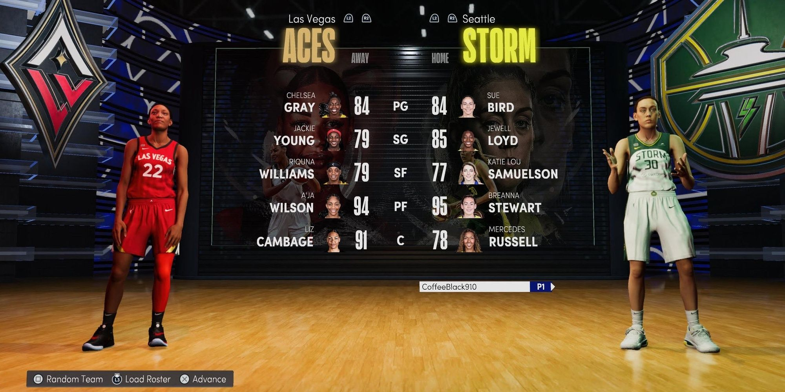
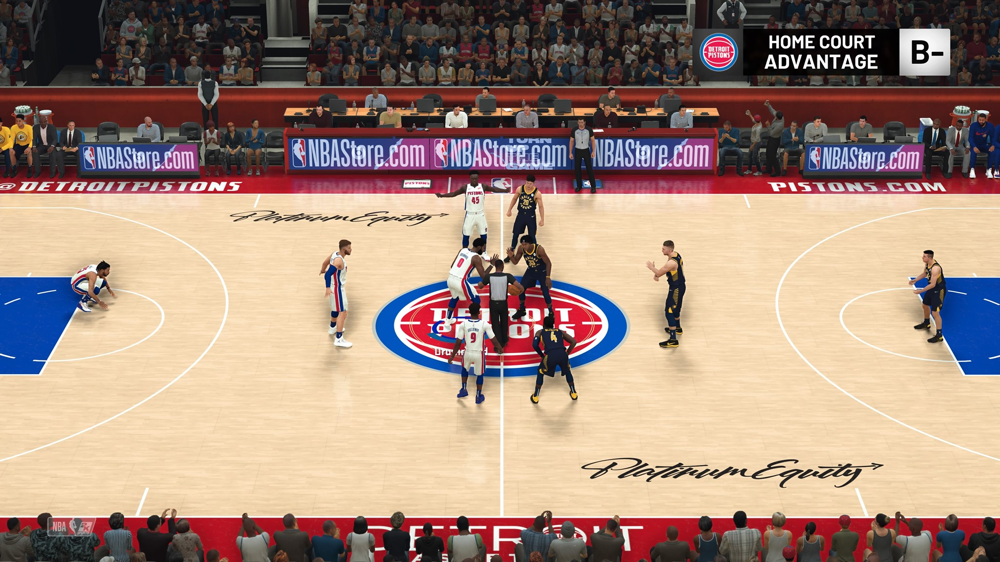
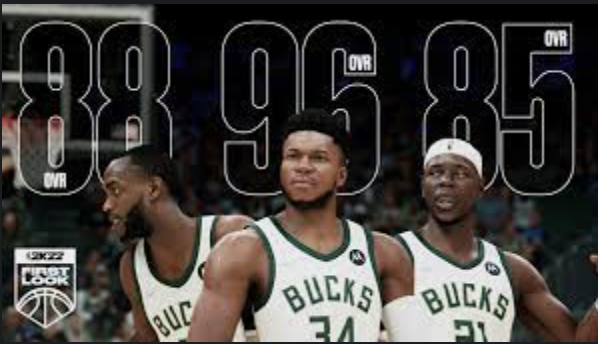
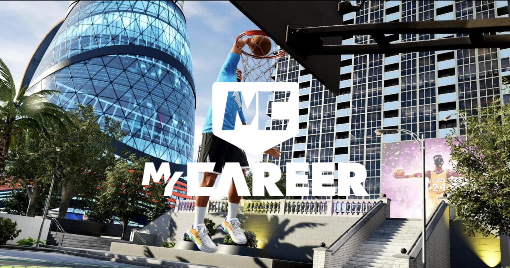
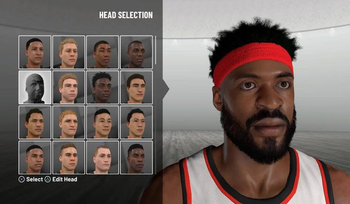
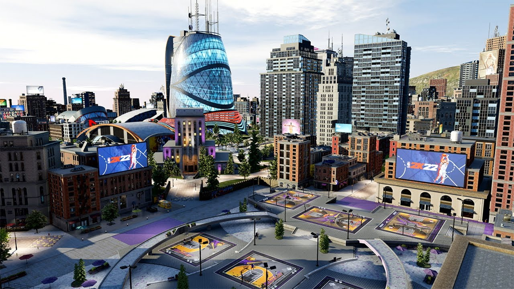
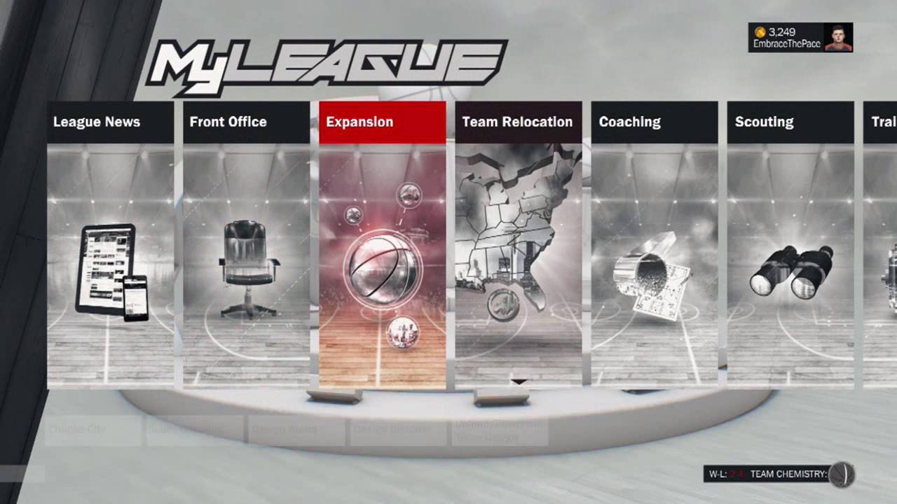
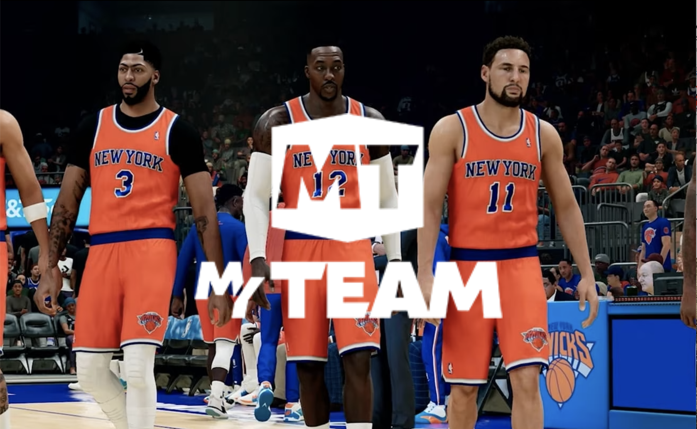
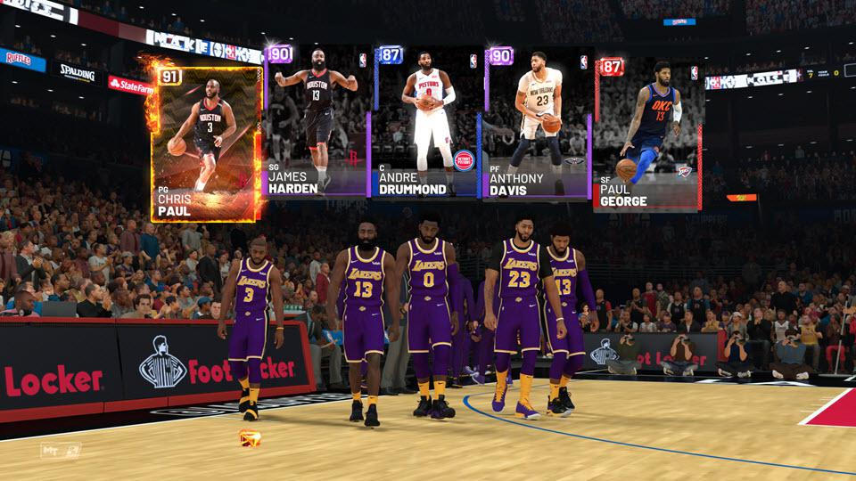

The primary, most played game mode in NBA 2k is play now. Each game can feature players and teams from the current NBA season, the current WNBA season, historic NBA teams, or all-time teams that are constcuted of the best players from every NBA franchise. The presentation resembles actual, televised NBA gameplay, and it allows users to match up against the computer, against a friend in two-player competitions, or online in real-time against a stranger. Additionally, users can play with up-to-date team rankings and player ratings that update throughout the NBA season to ensure that the NBA 2k world closely resembles the real-life skills and abilities of NBA teams and players.
   A staple of the NBA 2k series that debuted in 2k10 is the MyCareer game mode. Described by 2k as a sports-themed role-playing video game, this mode allows users to create their own NBA player and influence key moments in his career from draft night to their eventual retirement ceremony. Users can customize their players physique, height, weight, hair style, race, ethnicity, and mnay more features, but unfortunately the game mode has yet to include any gender capabilities. Over the course of a career, users improve their players skills, participate in off court activities in a simulated neighborhood known as 'The City', and interact with friends and others users in real-time.
  Another conerstone of the series is the franchise mode which allows users to assume control of an NBA franchise as a general manager. Titles MyGM and MyLeague in 2k22, this game mode provides NBA fans the chance to control every aspect of their favorite NBA teams from free agency to setting the lineup on gameday. If you are fan dissatisfied with the success or talent on your favorite team in real life, this is finally your chance to take over command.
Introduced in NBA 2k13, the MyTeam game mode allows users to build an NBA roster comprised of NBA player cards and compete aginst other users online. Players build their roster primarily by opening card packs whcih gift users an assortment of items including players, contracts, shoes, coahces, jerseys, and arenas. Users can also customize their own jerseys and home court while completing in challenges aginst the computer as well as online opponents. This option is sadly not available for WNBA players yet.
 